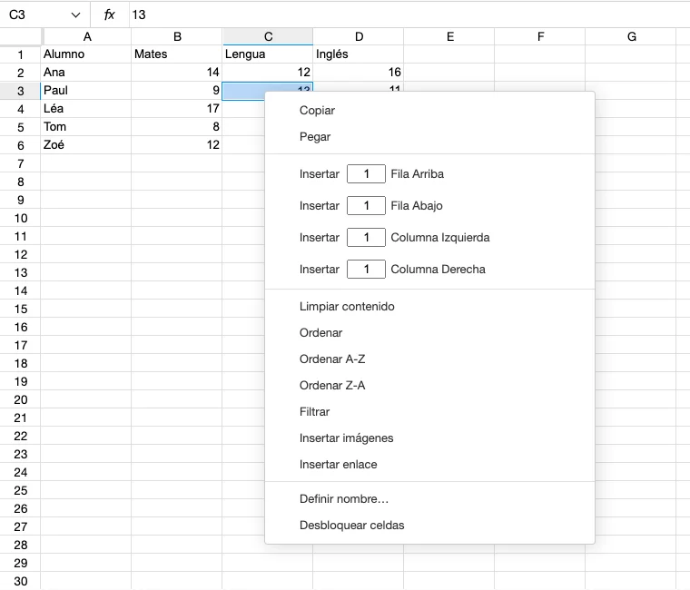

Filas y columnas
Tamaño
| Acción | Efecto |
|---|---|
| arrastrar el borde derecho del encabezado de una columna | cambia su anchura |
| arrastrar el borde inferior del encabezado de una fila | cambia su altura |
| clic derecho en el encabezado › Ancho, Alto | tamaño en píxeles, para todas las columnas o filas seleccionadas |
Insertar, eliminar
Clic derecho en una celda o en un encabezado: Insertar 1 Fila Arriba, Insertar 1 Fila Abajo, Insertar 1 Columna Izquierda, Insertar 1 Columna Derecha. El número se escribe en el campo. Clic derecho en un encabezado: Eliminar seleccionado Fila, Eliminar seleccionado Columna.

Las fórmulas se ajustan: sus referencias siguen a las celdas desplazadas. El límite es de 10 000 filas y 1 000 columnas.
Ocultar
Clic derecho en el encabezado › Esconder seleccionado Fila, Esconder seleccionado Columna. Las celdas ocultas se siguen calculando. Para volver a mostrarlas, seleccionar los encabezados que las rodean y clic derecho › Mostrar ocultos.
Inmovilizar
Las filas y columnas inmovilizadas permanecen visibles al desplazarse. Seleccionar la celda límite, luego o Ver › Fijar fila superior:
| Comando | Permanecen visibles |
|---|---|
| Fijar rango filas | las filas hasta la de la celda, incluida |
| Fijar rango columnas | las columnas hasta la de la celda, incluida |
| Fijar ambos rangos | ambas |
| Cancelar | nada en particular |
Para conservar la fila de encabezado: clic en una celda de la fila 1, Fijar rango filas.